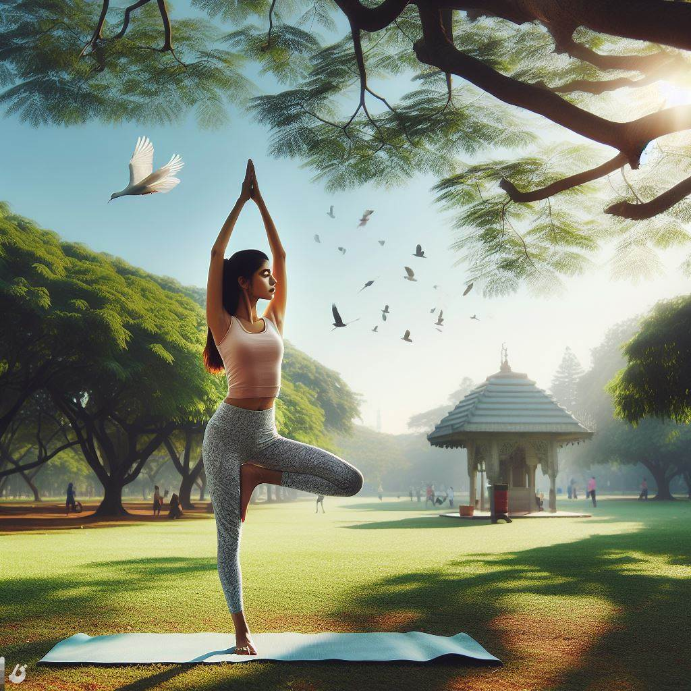

Benefícios do Alongamento
O alongamento é uma atividade física que consiste em esticar os músculos e as articulações, aumentando a sua elasticidade e amplitude de movimento. Praticar alongamento regularmente traz diversos benefícios para a saúde, como:
- Melhora a postura, reduzindo a tensão muscular e evitando o desconforto causado por uma má postura.
- Aumenta a flexibilidade, melhorando o desempenho nas atividades diárias e nos exercícios físicos, além de prevenir lesões musculares e articulares.
- Ativa a circulação sanguínea, favorecendo a oxigenação e a nutrição dos tecidos, além de auxiliar na recuperação de lesões e na eliminação de toxinas.
- Promove o relaxamento físico e mental, aliviando o estresse, a ansiedade e a depressão, e melhorando a qualidade do sono e do humor.
- Acalma a mente, trabalhando a respiração, a concentração e a consciência corporal, o que ajuda a controlar as emoções e a lidar com os problemas.
O alongamento pode ser praticado em qualquer hora e lugar, desde que se respeite os limites do corpo e se faça com cuidado e moderação. Recomenda-se alongar-se antes e depois de realizar exercícios físicos, para preparar e relaxar os músculos, respectivamente. Também é importante alongar-se ao acordar, para despertar o corpo, e ao longo do dia, para aliviar as tensões causadas pelo trabalho, pelo estudo ou pela rotina.
Portanto, o alongamento é uma prática simples, mas muito importante para a saúde e o bem-estar, que deve fazer parte do hábito de todas as pessoas, independentemente da idade ou do nível de condicionamento físico.
Antes de começar, é importante seguir algumas recomendações, como:
- Aquecer o corpo antes de alongar, fazendo exercícios leves, como caminhada, corrida, bicicleta,
polichinelos, entre outros, por cerca de 10 minutos.
- Alongar o corpo todo, começando pela cabeça e descendo até os pés, ou vice-versa,
sem esquecer nenhuma parte.
- Fazer os movimentos de forma lenta, suave e
controlada, sem forçar ou sentir dor, respeitando os limites do corpo.
- Manter a respiração normal, profunda e ritmada,
sincronizando com os movimentos, sem prender o ar ou hiperventilar.
- Manter cada posição de alongamento por pelo menos 20 segundos,
sem soltar ou relaxar o músculo, sentindo um leve desconforto ou tensão.
- Repetir cada exercício de duas a quatro vezes, alternando os lados, se for o caso,
e aumentando gradualmente a intensidade e a duração.
- Variar os exercícios periodicamente, para evitar a
adaptação muscular e o tédio, e experimentar novos desafios e estímulos.
A seguir, vamos apresentar alguns exemplos de exercícios de alongamento básico, que podem ser feitos em pé, sentado ou deitado. Lembre-se de seguir as recomendações acima e de
consultar um médico antes de iniciar qualquer atividade física.
Exercícios de alongamento básico em pé
- Alongamento dos braços e ombros: entrelace os dedos e estenda os braços para cima, com as palmas das mãos voltadas para o teto. Sinta o alongamento dos braços, dos ombros e das costas.
Mantenha a posição por 20 segundos e repita duas vezes.
- Alongamento do pescoço: incline a cabeça para o lado direito, aproximando a orelha do ombro, sem levantar o ombro. Coloque a mão direita sobre a cabeça e faça uma leve pressão. Sinta o alongamento do lado esquerdo do pescoço. Mantenha a
posição por 20 segundos e repita do outro lado. Faça duas vezes de cada lado.
- Alongamento das costas: afaste os pés na largura dos ombros e flexione os joelhos levemente. Coloque as mãos na cintura e incline o tronco para trás, olhando para o teto. Sinta o alongamento das costas e do abdômen.
Mantenha a posição por 20 segundos e repita duas vezes.
- Alongamento das pernas: afaste os pés na largura dos ombros e flexione o joelho direito, mantendo o esquerdo estendido. Coloque as mãos sobre o joelho direito e incline o tronco para frente, olhando para o chão. Sinta o alongamento da parte posterior da perna esquerda. Mantenha a posição por 20 segundos e repita do outro lado.
Faça duas vezes de cada lado.
- Alongamento dos pés: fique na ponta dos pés, apoiando-se em uma parede ou em uma cadeira. Sinta o alongamento da parte inferior das pernas e dos pés.
Mantenha a posição por 20 segundos e repita duas vezes.
Exercícios de alongamento básico sentado
- Alongamento dos braços e ombros: sente-se em uma cadeira, com as costas eretas e os pés no chão. Cruze o braço direito sobre o peito e segure-o com o braço esquerdo, puxando-o em direção ao corpo. Sinta o alongamento do braço e do ombro direitos. Mantenha a
posição por 20 segundos e repita do outro lado. Faça duas vezes de cada lado.
- Alongamento do pescoço: sente-se em uma cadeira, com as costas eretas e os pés no chão. Gire a cabeça para o lado direito, olhando por cima do ombro. Coloque a mão direita sobre a cabeça e faça uma leve pressão. Sinta o alongamento do lado esquerdo do pescoço. Mantenha a
posição por 20 segundos e repita do outro lado. Faça duas vezes de cada lado.
- Alongamento das costas: sente-se em uma cadeira, com as costas eretas e os pés no chão. Incline o tronco para frente até tocar as coxas com o peito (ou bem perto disso) e estenda os braços. Sinta o alongamento das costas, do pescoço e dos braços.
Mantenha a posição por 20 segundos e repita duas vezes.
- Alongamento das pernas: sente-se em uma cadeira, com as costas eretas e os pés no chão. Estenda a perna direita à frente e flexione a esquerda, apoiando o pé no chão. Incline o tronco para frente e tente tocar o pé direito com as mãos. Sinta o alongamento da parte posterior da perna direita. Mantenha a
posição por 20 segundos e repita do outro lado. Faça duas vezes de cada lado.
- Alongamento dos pés: sente-se em uma cadeira, com as costas eretas e os pés no chão. Levante o pé direito e gire-o no sentido horário e anti-horário, fazendo círculos com o tornozelo. Sinta o alongamento do pé e do tornozelo.
Faça 10 círculos de cada lado e repita com o pé esquerdo.
Exercícios de alongamento básico deitado
- Alongamento dos braços e ombros: deite-se de costas, com as pernas estendidas e os braços abertos na altura dos ombros. Flexione o joelho direito e cruze-o sobre a perna esquerda, girando o quadril para o lado esquerdo. Mantenha os ombros no chão e olhe para a mão direita. Sinta o alongamento do braço, do ombro e do peito direitos. Mantenha a
posição por 20 segundos e repita do outro lado. Faça duas vezes de cada lado.
- Alongamento do pescoço: deite-se de costas, com as pernas estendidas e os braços ao lado do corpo. Vire a cabeça para o lado direito e coloque a mão direita sobre a testa, fazendo uma leve pressão. Sinta o alongamento do lado esquerdo do pescoço. Mantenha a
posição por 20 segundos e repita do outro lado.
Faça duas vezes de cada lado.
- Alongamento das costas: deite-se de costas, com as pernas estendidas e os braços ao lado do corpo. Flexione os joelhos e abrace-os contra o peito, levantando a cabeça e ombros do chão. Sinta o alongamento das
costas e do abdômen. Mantenha a posição por 20 segundos e
repita duas vezes.
- Alongamento das pernas: deite-se de costas, com as pernas estendidas e os braços ao lado do corpo.
Levante a perna direita e prenda uma tira em volta.
